전기기사 (2006-08-06 기출문제)
1과목: 전기자기학
1. 공기 중에서 1m 간격을 가진 두 개의 평행 도체 전류의 단위길이에 작용하는 힘은 몇 N인가?
- 2 × 10-7
- 4 × 10-7
- 2π × 10-7
- 4π × 10-7
(정답률: 66%)

2. 평행판 콘덴서의 극간 전압을 일정하게 하고 극판사이에 극판 간격의 2/3두께의 유리판 (εs=10)을 삽입 할 때 극간의 흡인력은 공기가 극간에 있을 때에 비하여 어떻게 되는가?
- 2.5배로 커진다.
- 1.5배로 커진다.
- 0.6배로 작아진다.
- 0.8배로 작아진다.
(정답률: 55%)
3. 와전류가 이용되고 있는 것은?
- 수중 음파 탐지기
- 레이더
- 자기브레이크(magnetic brake)
- 사이클로트론(cyclotron)
(정답률: 56%)
4. 전기력선에 대한 다음 설명 중 옳은 것은?
- 전기력선은 양전하에서 시작하여 음전하에서 끝난다.
- 전기력선은 전위가 낮은 점에서 높은 점으로 향한다.
- 전기력선의 방향은 그 점의 전계의 방향과 반대이다.
- 전계가 0이 아닌 곳에서 2개의 전기력선은 항상 교차한다.
(정답률: 75%)
5. 변위전류 또는 변위전류밀도에 대한 설명 중 틀린 것은?
- 변위 전류밀도는 전속밀도의 시간적 변화율이다.
- 자유공간에서 변위전류가 만드는 것은 자계이다.
- 변위전류는 주파수와 관계가 있다.
- 시간적으로 변화하지 않는 계에서도 변위전류는 흐른다.
(정답률: 59%)
6. 유전률 ε1,ε2인 두 유전체 경계면에서 전계가 경계면에 수직일 때 경계면에 작용하는 힘은 몇 [N•m]인가?
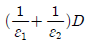
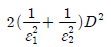
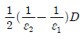
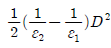
(정답률: 75%)
7. 평면도체 표면에서 진공내 d[m]의 거리에 점전하 Q[C]이 있을 때, 이 전하를 무한원까지 운반하는 데 요하는 일은 몇 [J]인가?
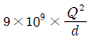
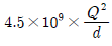
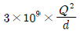
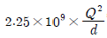
(정답률: 52%)
8. 높은 주파수의 전자파가 전파될 때 일기가 좋은 날보다 비 오는 날 전자파의 감쇄가 심한 원인은?
- 도전률 관계임.
- 유전률 관계임.
- 투자율 관계임.
- 분극률 관계임.
(정답률: 41%)
9. 반지름 a[m]의 구 도체에 전하 Q[C]이 주어질때 구 도체표면에 작용하는 정전응력은 약 몇 [N/m2]인가?
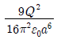
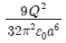
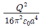
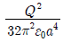
(정답률: 46%)
10. 무한장의 직선 도체에 선전하 밀도 ρ[C/m]로 전하가 충전될 때 이 직선 도체에서 r[m]만큼 떨어진 점의 전위는?
- ρ이다.
- ρㆍr이다.
- 0(Zero)이다.
- 무한대(∞)이다.
(정답률: 37%)
11. 자계의 세기 H[AT/m], 자속밀도 B[Wb/m2], 투자율 μ[H/m]인 곳의 자계의 에너지 밀도는 몇 [J/m3]인가?
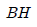
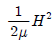
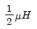
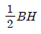
(정답률: 58%)
12. 그림들은 전자의 자기모멘트의 크기와 배열상태를 그 차이에 따라서 배열한 것이다. 강자성체에 속하는 것은?
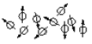
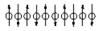
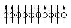
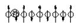
(정답률: 74%)
13. 막대자석의 회전력을 나타내는 식으로 옳은 것은? (단, 막대자석의 자기모멘트 M[Wbㆍm]와 균등자계 H[A/m]와의 이루는 각 θ는 0°＜θ＜90° 라 한다.)
- M × H[Nㆍm/rad]
- H × M[Nㆍm/rad]
- μ0H × M[Nㆍm/rad]
- M × μ0H[Nㆍm/rad]
(정답률: 68%)
14. Maxwell의 전자기파 방정식이 아닌 것은?
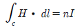
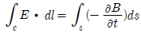
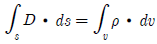
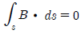
(정답률: 46%)
15. 다음의 전위함수에서 라플라스 방정식을 만족하지 않은 것은?
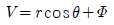
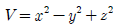
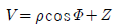
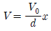
(정답률: 55%)
16. 100[kW]의 전력이 안테나로부터 사방으로 균일하게 방사되어 나갈 때 안테나로부터 10km 떨어진 점에서의 전계의 세기를 실효값으로 나타내면 약 몇 V/m인가?
- 0.087
- 0.173
- 0.346
- 0.519
(정답률: 39%)
17. 정현파 자속의 주파수를 2배로 높이면 유기 기전력은 어떻게 되는가?
- 변하지 않는다.
- 2배로 증가한다.
- 4배로 증가한다.
- 1/2이 된다.
(정답률: 74%)
18. 그림과 같은 두 개의 동심구 도체가 있다. 구사이가 진공으로 되어 있을 때 동심구간의 정전용량은 몇 [F] 인가?
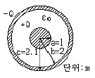
- 2πε0
- 4πε0
- 8πε0
- 12πε0
(정답률: 39%)
19. 단면적 4[cm2]의 철심에 6 × 10-4[Wb]의 자속을 통하게 하려면 2,800[AT/m]의 자계가 필요하다. 이 철심의 비투자율은 약 얼마인가?
- 346
- 375
- 407
- 427
(정답률: 70%)
20. 어떤 종류의 결정(結晶)을 가열하면 한면(面)에 정(正), 반대 면에 부(負)의 전기가 나타나 분극을 일으키며, 반대로 냉각하면 역(逆) 분극이 생긴다. 이 것을 무엇이라 하는가?
- 파이로(Pyro) 전기
- 볼타(Volta) 효과
- 바아크 하우센(Barkharsen) 법칙
- 압전기(Piezo-electric)의 역효과
(정답률: 43%)
2과목: 전력공학
21. 선로의 길이가 50km인 66kV 3상3선식 1회선 송전선의 1선당 대지정전용량은 0.0⑤8μF/km이다. 여기에 시설할 소호리액터의 용량은 약 몇 kVA인가? (단, 소호리액터의 용량은 10%의 여유를 주도록 한다.)
- 386
- 435
- 524
- 712
(정답률: 40%)
22. 설비용량 600kW, 부등률 1.2, 수용률 60% 일때의 합성 최대 수용전력은 몇 kW인가?
- 240
- 300
- 432
- 833
(정답률: 64%)
23. 배전계통에서 전력용 콘덴서를 설치하는 목적으로 다음 중 가장 타당한 것은?
- 전력손실 감소
- 개폐기의 타단 능력 증대
- 고장시 영상전류 감소
- 변압기 손실 감소
(정답률: 71%)
24. 송전선로에서 단선 고장시 이상 전압이 가장 큰 접지 방식은?
- 비 접지방식
- 직접 접지방식
- 저항 접지방식
- 소호리액터 접지방식
(정답률: 46%)
25. 선로의 단위 길이당의 분포 인덕턴스를 L, 저항을 r, 정전용량을 C, 누설 콘덕턴스를 각각 g라 할 때 전파정수는 어떻게 표현되는가?
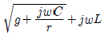
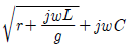
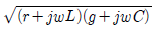
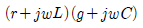
(정답률: 74%)
26. 3상3선식 가공 송전선로의 선간거리가 각각 D12, D23, D31일 때 등가선간거리는 어떻게 표현되는가?
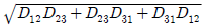
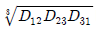
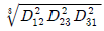
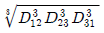
(정답률: 72%)
27. 불평형 3상 전압율 Va, Vb, Vc라 하고
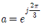
라 할 때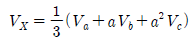
이다. 여기에서 Vx는 어떤 전압을 나타내는가?- 정상전압
- 단락전압
- 영상전압
- 지락전압
(정답률: 76%)
28. 3상용 차단기의 용량은 그 차단기의 정격전압과 정격차단 전류와의 곱을 몇 배한 것인가?
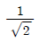
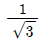
- √2
- √3
(정답률: 74%)
29. 그림과 같은 전력계통에서 A점에 설치된 차단기의 단락 용량은 몇 MVA인가? (단, 각 기기의 %리액턴스는 발전기 G1, G2는 정격용량 15MVA 기준 각각 15%이고, 변압기는 정격용량 20MVA 기준 8%, 송전선은 정격용량 10MVA 기준 11%이며, 기타 다른 정수는 무시한다.)
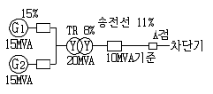
- 20
- 30
- 40
- 50
(정답률: 47%)
30. MHD 발전에 대한 설명으로 옳은 것은?
- 수차 직결 유도발전기에 의한 발전방식이다.
- 2종의 도체의 접점간에 온도차가 생겼을 때 기전력이 발생되는 발전방식이다.
- 열음극으로부터 열전자 방출에 의한 발전방식이다.
- 도전성유체와 자장의 상호작용에 의한 직접발전 방식이다.
(정답률: 30%)
31. 송전선로에서 가공지선을 설치하는 목적이 아닌것은?
- 뇌(雷)의 직격을 받을 경우 송전선 보호
- 유도에 의한 송전선의 고전위 방지
- 통신선에 대한 차폐효과 증진
- 철탑의 접지저항 경감
(정답률: 65%)
32. 망상(Network) 배전방식에 대한 설명으로 옳은 것은?
- 부하 증가에 대한 융통성이 적다.
- 전압 변동이 대체로 크다.
- 인축에 대한 감전사고가 적어서 농촌에 적합하다.
- 환상식보다 무정전 공급의 신뢰도가 더 높다.
(정답률: 61%)
33. 전력계통의 안정도 향상대책으로 직렬 리액턴스를 작게 하기 위한 방법이 아닌 것은?
- 발전기의 리액턴스를 작게 한다.
- 변압기의 리액턴스를 작게 한다.
- 복도체를 사용한다.
- 계통을 연계한다.
(정답률: 31%)
34. 다음 중 켈빈(Kelvin)의 법칙이 적용되는 경우는?
- 전력 손실량을 축소시키고자 하는 경우
- 전압 강하를 감소시키고자 하는 경우
- 부하 배분의 균형을 얻고자 하는 경우
- 경제적인 전선의 굵기를 선정하고자 하는 경우
(정답률: 79%)
35. 가압수형 동력용 원자로에 대한 설명으로 옳은 것은?
- 냉각재인 경수는 가압되지 않은 상태이므로 끓여서 높은 온도까지 올려야 한다.
- 노심에서 발생한 열은 가압된 경수에 의하여 열교환기에 운반된다.
- 노심은 약 100[kg/cm2]정도의 압력에 견딜 수 있는 압력 용기 안에 들어 있다.
- 가압수형 원자로는 BWR 이라고 한다.
(정답률: 55%)
36. 배전반에 접속되어 운전 중인 PT와 CT를 점검할 때의 조치사항으로 옳은 것은?
- CT는 단락시킨다.
- PT는 단락시킨다.
- CT와 PT 모두를 단락시킨다.
- CT와 PT 모두를 개방시킨다.
(정답률: 63%)
37. 송배전선로에서 전선의 장력을 2배로 하고 또 경간을 2배로하면 전선의 이도는 처음의 몇 배가 되는가?
- 1/4
- 1/2
- 2
- 4
(정답률: 68%)
38. 변압기의 내부 고장시 동작하는 것으로서 단락 고장의 검출 등에 사용되는 계전기는?
- 부족전압계전기
- 비율차동계전기
- 재폐로계전기
- 선택계전기
(정답률: 76%)
39. 화력발전소에서 재열기의 목적은?
- 공기를 가열한다.
- 급수를 가열한다.
- 증기를 가열한다.
- 석탄을 건조한다.
(정답률: 75%)
40. 한 대의 주상변압기에 역률(뒤짐) cosθ1, 유효전력 P[kW]의 부하와 역률(뒤짐) cosθ2, 유효전력 P[kW]의 부하가 병렬로 접속되어 있을 때 주상변압기 2차측에서 본 부하의 종합 역률은 어떻게 되는가?
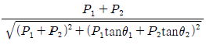
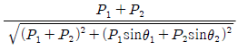
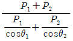
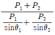
(정답률: 74%)
3과목: 전기기기
41. 동기발전기의 단자 부근에서 단락사고가 발생했다. 이 때 단락전류에 대한 설명으로 가장 옳은 것은?
- 서서히 증가해서 일정한 전류가 된다.
- 급격히 증가한 후 일정한 전류로 감소한다.
- 서서히 감소해서 일정 전류가 된다.
- 서서히 감소하다가 다시 일정 전류 이상으로 증가한다.
(정답률: 67%)
42. 인가전압과 여자가 일정한 동기전동기에서 전기자 저항과 동기 리액턴스가 같으면 최대출력을 내는 부하각은 몇 도 인가?
- 30°
- 45°
- 60°
- 90°
(정답률: 48%)
43. 변압기 보호 장치의 주된 목적으로 볼 수 없는 것은?
- 다른 부분으로의 사고 확산 방지
- 절연내력 저하 방지
- 변압기 자체 사고의 최소화
- 전압 불평형 개선
(정답률: 54%)
44. 변압기에서 발생하는 손실 중 1차측 전원에 접속되어 있으면 부하의 유무에 관계없이 발생하는 손실은?
- 동손
- 표유부하손
- 철손
- 부하손
(정답률: 65%)
45. 전기기기에서 절연의 종류 중 B종 절연물의 최고 허용온도는 몇 ℃인가?
- 90
- 1⑤
- 120
- 130
(정답률: 45%)
46. 권선형 유도 전동기를 급격히 정지시키려 할 때 가장 적합한 방식은?
- 2차 저항법
- 역상제어법
- 고정자 단상법
- 불평형법
(정답률: 53%)
47. 4극, 회전수 1,800rpm인 직류 발전기가 있다. 축방향의 길이가 0.4m, 전기자 지름이 0.6m, 전기자 코일수가 24, 한 개의 코일 권수가 18, 공극의 평균 자속밀도가 0.1[Wb/m2]일 때 유기기전력은 약 몇 [V]인가? (단, 권선법은 단중 파권일 때이다.)(문제 오류로 전항 정답 처리된 문제입니다. 여기서는 가답안인 4번을 누르면 정답 처리 됩니다.)
- 204
- 244
- 407
- 488
(정답률: 48%)
48. 2대의 변압기로 V 결선하여 3상 변압하는 경우 변압기 이용률은 약 몇 % 인가?
- 57.8
- 66.6
- 86.6
- 100
(정답률: 70%)
49. 4극, 60Hz의 3상 동기 발전기가 있다. 회전자의 주변속도를 200[m/s] 이하로 하려면 회전자의 최대지름을 약 몇 [m]로 하여야 하는가?
- 1.5
- 1.8
- 2.1
- 2.8
(정답률: 52%)
50. 회전변류기의 직류측 전압을 조정하는 방법이 아닌 것은?
- 직렬 리액턴스에 의한 방법
- 부하시 전압 조정 변압기를 사용하는 방법
- 동기 승압기를 사용하는 방법
- 여자전류를 조정하는 방법
(정답률: 35%)
51. 그림과 같은 변압기에서 1차 전류는 몇 A 인가?
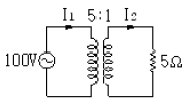
- 0.8
- 8
- 10
- 20
(정답률: 54%)
52. 반도체 다이리스터에 의한 속도제어에서 제어가 되지 않는 것은?
- 토크
- 전압
- 위상
- 주파수
(정답률: 45%)
53. 상전압 200V인 3상 반파정류회로에 SCR을 사용하여 위상제어를 할 때 제어각이 60°이면 직류 출력 전압은 약 몇 V 인가?
- 117
- 187
- 216
- 234
(정답률: 43%)
54. 다음 중 직류 발전기의 계자철심에 잔류자기가 없어도 발전을 할 수 있는 발전기는?
- 타여자 발전기
- 분권 발전기
- 직권 발전기
- 복권 발전기
(정답률: 70%)
55. 100kW 4극, 3300V, 주파수 60Hz의 3상 유도전동기의 효율이 92%, 역률이 90%일 때 입력은 약 몇 kVA인가?
- 42.8
- 220.8
- 21.1
- 120.8
(정답률: 46%)
56. 100[V], 10[kW], 1,000[rpm]의 분권 전동기를 부하전류 102A의 정격 속도로 운전하고 있다. 지금 전기자에 직렬로 저항 0.4Ω을 접속하고, 전과 동일한 토크로 운전하면 약 몇 rpm으로 회전하겠는가? (단, 전기자 및 분권 계자회로의 저항은 각 각 0.⑤Ω과 50Ω이다.)
- 560
- 570
- 580
- 590
(정답률: 47%)
57. 8극과 4극 2개 유도전동기를 직렬 종속법으로 속도 제어를 할 때 전원 주파수가 60Hz인 경우 무부하 속도는 몇 [rpm]인가?
- 600
- 900
- 1,200
- 1,800
(정답률: 52%)
58. 동기 발전기에서 유기 기전력과 전기자 전류가 동상인 경우의 전기자 반작용은?
- 교차자화작용
- 증자작용
- 감자작용
- 직축반작용
(정답률: 66%)
59. 직류전동기 중 전기철도에 가장 적합한 전동기는?
- 분권식 전동기
- 직권식 전동기
- 복권식 전동기
- 자여자 분권 전동기
(정답률: 71%)
60. 무부하의 경우 분권 전동기의 설명 중 가장 옳은 것은?
- 공급전압의 극성을 반대로 하면 회전방향이 바뀐다.
- 공급전압을 증가시켜도 회전속도는 별로 변하지 않는다.
- 분권 계자권선의 계자 조정기의 저항을 감소시키면 회전속도는 증가한다.
- 발전제동을 하는 경우에 분권 계자권선의 접속을 반대로 접속한다.
(정답률: 33%)
4과목: 회로이론 및 제어공학
61. 10mH의 두 자기인덕턴스가 있다. 결합계수를 0.1로부터 0.9까지 변화시킬 수 있다면 이것을 접속시켜 얻을 수 있는 합성 인덕턴스의 최대값과 최소값의 비는 얼마인가?
- 9:1
- 13:1
- 16:1
- 19:1
(정답률: 46%)
62. 그림과 같은 T형 4단자 회로망의 임피던스 파라미터 Z11은?
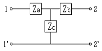
- Zb+Zc
- Za+Zc
- Za+Zb
- Zb
(정답률: 69%)
63. 한 상의 임피던스가 6+j8 Ω 인 △부하에 대칭선간전압 200V를 인가할 때 3상 전력은 몇 W인가?
- 2,400
- 3,600
- 7,200
- 10,800
(정답률: 51%)
64. 그림과 같은 회로에서 처음에 스위치 S 가 닫힌 상태에서 회로에 정상전류가 흐르고 있었다. t=0에서 스위치 S를 연다면 회로의 전류는?
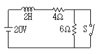
- 2+3e-5t
- 2+3e-2t
- 4+2e-2t
- 4+2e-5t
(정답률: 36%)
65. 어떤 송전선로가 무손실 선로일 때 감쇄정수는 얼마인가?
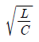
- 0
(정답률: 48%)
66. 3상 불평형 전압에서 역상전압 50V,정상전압 250V 및 영상전압 20V이면, 전압 불평형률은 몇 %인가?
- 10
- 15
- 20
- 25
(정답률: 63%)
67. 함수 을 라플라스 역변환하면 f(t)는 어떻게 되는가?
- 3e-2t
- 3e2t
- 3te2t
- 3te-2t
(정답률: 58%)
68. 그림과 같은 회로의 전달함수는?
(정답률: 58%)
69. 3[μF]인 커패시턴스를 50Ω의 용량 리액턴스로 사용하면 주파수는 약 몇 [Hz]인가?
- 1.06 × 103
- 2.06 × 103
- 3.06 × 103
- 4.06 × 103
(정답률: 52%)
70. 비정현파 전압이 V = √2 100sin ωt + √2 30 sin 3ωt[V]??일 때 실효치는 약 몇 V인가 ?(오류 신고가 접수된 문제입니다. 반드시 정답과 해설을 확인하시기 바랍니다.)
- 13.4
- 38.6
- 115.7
- 180.3
(정답률: 48%)
71. 그림과 같은 요소는 제어계의 어떤 요소인가?
- 적분요소
- 미분요소
- 1차 지연요소
- 1차 지연 미분요소
(정답률: 56%)
72. 폐루프 전달함수 G(s)가 인때 근궤적의 허수축과의 교점이 64이면 이득 여유는 약 몇 dB인가?
- 6
- 12
- 18
- 24
(정답률: 34%)
73. 논리식 을 간단히 하면 ?
- x・y
- x+y
(정답률: 65%)
74. 다음 그림 중 ①에 알맞은 신호는?
- 기준입력
- 동작신호
- 조작량
- 제어량
(정답률: 38%)
75. 다음의 설명 중 틀린 것은?
- 상태공간 해석법은 비선형・시변 시스템에 대해서도 사용 가능하다.
- 상태 방정식은 입력과 상태변수의 관계로 표현된다.
- 상태변수는 시스템의 과거, 현재 그리고 미래 조건을 나타내는 척도로 이용된다.
- 상태 방전식의 형태가 다르게 표현되면 시간응답 또는 주파수 응답이 변한다.
(정답률: 34%)
76. 의 나이퀴스트 선도는?
(정답률: 65%)
77. 그림과 같은 제어계가 안정하기 위한 K의 범위는?
- K＜-2
- K＞6
- 0＜K＜6
- K＞6, K＜0
(정답률: 65%)
78. 단위 부궤환 시스템에서 개루프 전달 함수 G(s)가 다음과 같을 때 k=3 이면 무슨 제동인가?
- 무제동
- 임계제동
- 과제동
- 부족제동
(정답률: 42%)
79. 벡터 궤적의 임계점(-1,j0)에 대응하는 보드 선도상의 점은 이득이 A[dB], 위상이 B 되는 점이다. A,B에 알맞은 것은?
- A=0[dB], B=-180°
- A=0[dB], B=0°
- A=1[dB], B=0°
- A=1[dB], B=180°
(정답률: 72%)
80. 다음 동작 중 속응도와 정상 편차에서 최적 제어가 되는 것은?
- PI동작
- P동작
- PD동작
- PID동작
(정답률: 67%)
5과목: 전기설비기술기준 및 판단기준
81. 폭발성 또는 연소성의 가스가 침입할 우려가 있는 곳에 시설하는 지중전선로의 지중함은 그 크기가 최소 몇 m3이상인 경우에는 통풍 장치 기타 가스를 방사시키기 위한 적당한 장치를 시설하여야 하는가?
- 1
- 3
- 5
- 10
(정답률: 64%)
82. 옥내에 시설하는 고압용 이동전선으로 사용 가능한 것은?
- 2.6mm 연동선
- 비닐 캡타이어 케이블
- 고압용 제3종 클로로프렌 캡타이어 케이블
- 600볼트 고무절연전선
(정답률: 53%)
83. “제2차 접근상태”라 함은 가공 전선이 다른 시설물과 접근하는 경우에 그 가공전선이 다른 시설물의 위쪽 또는 옆쪽에서 수평거리로 몇 m미만인 곳에 시설되는 상태를 말하는가?
- 2
- 3
- 4
- 5
(정답률: 57%)
84. 사용전압이 몇 V를 넘는 특별고압 가공전선과 가공 약전류 전선 등은 동일 지지물에 시설하여서는 아니 되는가?
- 6,600
- 22,900
- 30,000
- 35,000
(정답률: 39%)
85. 수용장소의 인입구 부근에서 대지간의 전기 저항값이 3Ω 이하를 유지하는 건물의 철골이 있는 경우에는 이것을 접지극으로 사용하여 제 몇 종 접지공사를 한 저압전선로의 접지측 전선에 추가로 인입구 부근에서 접지공사를 할 수 있는 가?
- 제1종 접지공사
- 제2종 접지공사
- 제3종 접지공사
- 특별 제3종 접지공사
(정답률: 20%)
86. 전로에 시설하는 기계기구의 철대 및 금속제 외함에는 접지공사를 하여야 하난 그렇지 않은 경우가 있다. 접지공사를 하지 않아도 되는 경우에 해당되는 것은?
- 철대 또는 외함의 주위에 적당한 절연대를 설치하는 경우
- 사용전압이 직류 300V인 기계기구를 습한 곳에 시설하는 경우
- 교류 대지전압이 300V인 기계기구를 건조한 곳에 시설하는 경우
- 저압용의 기계기구를 사용하는 전로에 지기가 생겼을 때 그 전로를 자동적으로 차단하는 장치가 없는 경우
(정답률: 46%)
87. 특별고압 옥상 전선로는 원칙적으로 시설하여서는 아니된다. 다만, 사용전압이 몇 V 미만인 경우로서 특별한 이유에 의하여 인가를 받은 경우에는 그러하지 아니한가?
- 23,000
- 66,000
- 100,000
- 170,000
(정답률: 13%)
88. 폭연성 분진 또는 화약류의 분말이 전기설비가 발화원이 되어 폭발할 우려가 있는 곳에 시설하는 저압 옥내 전기설비의 배선공사를 할 수 있는 것은?
- 애자사용공사
- 캡타이어 케이블공사
- 합성수지관공사
- 금속관공사
(정답률: 52%)
89. 사용전압이 400V 미만인 쇼윈도 또는 쇼케이스 안의 배선공사에 캡타이어 케이블을 사용하여 직접 조영재에 접촉하여 시설하는 경우, 전선의 붙임점 간의 거리는 최대 몇 [m] 이하로 하는 가?
- 0.3
- 0.5
- 0.8
- 1
(정답률: 33%)
90. 고압 가공전선 상호간이 접근 또는 교차하여 시설되는 경우, 고압 가공전선 상호간의 이격거리는 몇 cm 이상이어야 하는가? (단, 고압 가공전선은 모두 케이블이 아니라고 한다.)
- 50
- 60
- 70
- 80
(정답률: 35%)
91. 길이가 몇 [km] 이상의 고압 가공 전선로에는 보안상 특히 필요한 경우에 가공 전선로의 적당한 곳에서 통화할 수 있도록 휴대용 또는 이동용의 전력보안 통신용 전화설비를 시설하여야 하는가?
- 2
- 5
- 10
- 20
(정답률: 48%)
92. 용량 몇 [kVA] 이상의 조상기에는 그 내부에 공이 생긴 경우에 자동적으로 이를 전로로부터 차단하는 장치를 하여야 하는가?
- 5,000
- 10,000
- 15,000
- 20,000
(정답률: 57%)
93. 목장에서 가축의 탈출을 방지하기 위하여 전기 울타리를 시설하는 경우의 전선으로 경동선을 사용할 경우 그 최소 굵기는 지름 몇 [mm]인가?
- 1
- 1.2
- 1.6
- 2
(정답률: 42%)
94. 금속제 지중관로에 대하여 전식작용에 의한 장해를 줄 우려가 있는 경우에 배류시설에 선택배류기를 사용하였다. 이때 선택배류기를 보호할 목적으로 어떤 것을 시설하여야 하는가?
- 과전류차단기
- 과전압계전기
- 유입개폐기
- 피뢰기
(정답률: 55%)
95. 교통신호등 회로의 사용전압은 몇 [V]이하이어야 하는가?
- 60
- 110
- 220
- 300
(정답률: 47%)
96. 과전류차단기로 시설하는 퓨즈 중 고압전로에 사용하는 비포장 퓨즈의 특성에 해당되는 것은?
- 정격전류의 1.25배의 전류에 견디고, 2배의 전류로 120분 안에 용단되는 것이어야 한다.
- 정격전류의 1.1배의 전류에 견디고, 2배의 전류로 120분 안에 용단되는 것이어야 한다.
- 정격전류의 1.25배의 전류에 견디고, 2배의 전류로 2분 안에 용단되는 것이어야 한다.
- 정격전류의 1.1배의 전류에 견디고, 2배의 전류로 2분 안에 용단되는 것이어야 한다.
(정답률: 42%)
97. 특별고압 가공전선로에 사용하는 가공지선에는 지름 몇 [mm]의 나경동선 또는 이와 동등 이상의 세기 및 굵기의 나선을 사용하여야 하는 가?
- 2.6
- 3.5
- 4
- 5
(정답률: 36%)
98. 가공 전선로의 지지물에 시설하는 지선의 설치기준으로 옳은 것은?
- 지선의 안전율은 1.2 이상일 것
- 지선으로 연선을 사용할 경우에는 소선 3가닥 이상의 연선일 것
- 소선은 지름 1.2mm 이상인 금속선일 것
- 허용인장하중의 최저는 220kg으로 할 것
(정답률: 69%)
99. 지중 전선로의 전선으로 사용되는 것은?
- 절연전선
- 케이블
- 다심형전선
- 나전선
(정답률: 65%)
100. 발전기, 변압기, 조상기, 계기용변성기, 모선 또는 이를 지지하는 애자는 어느 전류에 의하여 생기는 기계적 충격에 견디는 것이어야 하는가?
- 순시전류
- 부하전류
- 충전전류
- 단락전류
(정답률: 64%)
F = (μ₀/2π) * I₁I₂ / d
여기서,
F: 두 전류 사이에 작용하는 힘
μ₀: 자유공간의 유전율 (4π × 10^-7)
I₁, I₂: 두 전류의 크기
d: 두 전류 사이의 거리
따라서, F = (4π × 10^-7 / 2π) * I₁I₂ / d = 2 × 10^-7 * I₁I₂ / d
따라서, 두 전류의 크기와 거리에 따라 달라지지만, 단위길이당 작용하는 힘은 항상 2 × 10^-7 N이다.